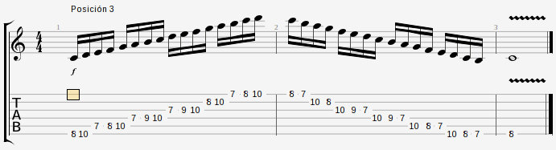
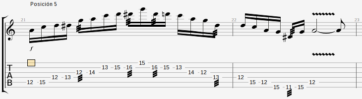

Escalas
Escala mayor de C y menor de A
Digamos que es la base de todo...
-> Relación:
Escala mayor de C:
1° 2° 3° 4° 5° 6° 7° 8°
C D E F G A
B C
1 1 ½ 1 1
1 ½
(3-7)
Escala menor de A:
1° 2° 3° 4° 5° 6° 7° 8°
A B C D E F
G A
1 ½ 1 1 ½
1 1
(2-5)
-> Relación:
- En el 6° grado de la escala mayor de C empieza la escala menor de A (A es el relativo menor de C).
- En el 3° grado de la escala menor de A empieza la escala mayor de C (C es el relativo mayor de A).
Esta relación tiene que ver con los modos griegos, la escala menor natural es el 6° modo (eólico).
La diferencia entre una escala mayor y una menor está en los grados 3° y 6°, el resto son iguales.
- En el 3° grado de la escala menor de A empieza la escala mayor de C (C es el relativo mayor de A).
Esta relación tiene que ver con los modos griegos, la escala menor natural es el 6° modo (eólico).
La diferencia entre una escala mayor y una menor está en los grados 3° y 6°, el resto son iguales.
Escalas pentatónicas y de Blues
Es una escala "rockera", de 5 sonidos:
- Si a una escala mayor le sacamos el 4° y 7° grado, nos queda una escala pentatónica mayor
- Si a una escala menor natural le sacamos el 2° y 6° grado, nos queda una escala pentatónica menor
La escala de Blues es una escala pentatónica a la que se le agrega la blue note (3° o 5° bemol -dependiendo si es mayor o menor-).
- Si a una escala mayor le sacamos el 4° y 7° grado, nos queda una escala pentatónica mayor
- Si a una escala menor natural le sacamos el 2° y 6° grado, nos queda una escala pentatónica menor
La escala de Blues es una escala pentatónica a la que se le agrega la blue note (3° o 5° bemol -dependiendo si es mayor o menor-).
Escala pentatónica dominante
Es la escala pentatónica menor, pero con la 3° mayor. Proviene del modo mixolidio. Le podemos agregar la blue note si queremos.
Escala pentatónica disminuída
Es la escala pentatónica menor, pero con la blue note (5° bemol) y sin la 5°. Puede sonar sobre un acorde ∅.
Modos griegos
De la escala mayor, surgen más escalas al desplazar el orden de las notas. Estas escalas tienen las mismas notas que la escala mayor. Se llaman:
1) Jónico
2) Dórico
3) Frigio
4) Lidio
5) Mixolidio
6) Eólico
7) Locrio
... y el orden de las notas surge de arrancar la escala mayor desde un determinado grado de la escala.
Por ejemplo: la escala de C es...
1° 2° 3° 4° 5° 6° 7°
C D E F G A B
...entonces el modo frigio es igual pero empezando del 3° grado:
1° 2° 3° 4° 5° 6° 7°
E F G A B C D
Parece un cambio muy simple pero tocar la escala frigia da un sonido totalmente diferente al que se da tocando la escala mayor o “modo jónico”. Con esta nomenclatura, la escala menor natural (que partía del 6° grado) pasaría a llamarse “modo eólico”.
Con esto separamos la escala mayor en 7 escalas, lo que nos da la opción de hacer una canción en -por ejemplo- la tonalidad mixolidia, o el modo que sea.
Usándolos en una tonalidad:
Se puede usar el modo asociado a cada acorde en el momento que corresponda. Por ejemplo: Base en C, Dm, G. Improvisaríamos en los modos jónico, dórico y mixolidio respectivamente. Esto resaltaría más la funcíón que cumple cada acorde en la armonía.
Usándolos como escala:
Podemos averiguar el sonido de cada modo, dejando sonar por ejemplo un acorde C y tocar la escala jónica de C, un Dm y tocar la escala dórica de D, un Em y tocar la escala frigia de E, etc.
Mayores y menores:
Modos mayores: Jónico, Lidio, Mixolidio
Modos menores: Dórico, Frigio, Eólico, Locrio
Notas características de cada modo:
Cada uno tiene una nota característica que lo diferencia de una escala mayor/menor común y corriente...
Dórico: 6° aumentada
Frigio: 2° bemol
Lidio: 4° aumentada
Mixolidio: 7° menor
Locrio: 2° y 5° bemol
Es conveniente conocer esto a la hora de improvisar, para poder "sonar dórico" o "sonar mixolidio".
Uso de los modos a nivel melódico:
Maj7 => Lidio o Jónico
m7 => Dórico o Eólico
7 => Mixolidio (cuando resuelve a un acorde mayor)
7 => Frigio (cuando resuelve a un acorde menor)
m7b5 => Locrio
1) Jónico
2) Dórico
3) Frigio
4) Lidio
5) Mixolidio
6) Eólico
7) Locrio
... y el orden de las notas surge de arrancar la escala mayor desde un determinado grado de la escala.
Por ejemplo: la escala de C es...
1° 2° 3° 4° 5° 6° 7°
C D E F G A B
...entonces el modo frigio es igual pero empezando del 3° grado:
1° 2° 3° 4° 5° 6° 7°
E F G A B C D
Parece un cambio muy simple pero tocar la escala frigia da un sonido totalmente diferente al que se da tocando la escala mayor o “modo jónico”. Con esta nomenclatura, la escala menor natural (que partía del 6° grado) pasaría a llamarse “modo eólico”.
Con esto separamos la escala mayor en 7 escalas, lo que nos da la opción de hacer una canción en -por ejemplo- la tonalidad mixolidia, o el modo que sea.
Usándolos en una tonalidad:
Se puede usar el modo asociado a cada acorde en el momento que corresponda. Por ejemplo: Base en C, Dm, G. Improvisaríamos en los modos jónico, dórico y mixolidio respectivamente. Esto resaltaría más la funcíón que cumple cada acorde en la armonía.
Usándolos como escala:
Podemos averiguar el sonido de cada modo, dejando sonar por ejemplo un acorde C y tocar la escala jónica de C, un Dm y tocar la escala dórica de D, un Em y tocar la escala frigia de E, etc.
Mayores y menores:
Modos mayores: Jónico, Lidio, Mixolidio
Modos menores: Dórico, Frigio, Eólico, Locrio
Notas características de cada modo:
Cada uno tiene una nota característica que lo diferencia de una escala mayor/menor común y corriente...
Dórico: 6° aumentada
Frigio: 2° bemol
Lidio: 4° aumentada
Mixolidio: 7° menor
Locrio: 2° y 5° bemol
Es conveniente conocer esto a la hora de improvisar, para poder "sonar dórico" o "sonar mixolidio".
Uso de los modos a nivel melódico:
Maj7 => Lidio o Jónico
m7 => Dórico o Eólico
7 => Mixolidio (cuando resuelve a un acorde mayor)
7 => Frigio (cuando resuelve a un acorde menor)
m7b5 => Locrio
Escala menor armónica
Es igual a la escala menor natural pero con el 7° grado aumentado.
Lo más común es utilizar el 5° modo de la escala, y en ese caso estaríamos hablando del modo frigio dominante. Este modo se puede usar cuando estamos en un acorde dominante, cuando resuelve a un acorde menor.
Lo más común es utilizar el 5° modo de la escala, y en ese caso estaríamos hablando del modo frigio dominante. Este modo se puede usar cuando estamos en un acorde dominante, cuando resuelve a un acorde menor.
Escala menor melódica
Es una escala derivada del modo eólico. Se suele tocar normalmente al ascender, pero descendiendo con el modo eólico sin alteraciones.
Escala disminuida
- Puede sonar sobre un acorde 7, si se toca un semitono más arriba *
- Se repite cada 1 tono y medio
* Un acorde 7, se puede reemplazar por un acorde ° (disminuído) ubicado un semitono más arriba. Entonces, por ejemplo, arriba de un B7 podría usar la escala o el arpegio disminuído de C. En este caso el C° estaría actuando como dominante secundario.
- Se repite cada 1 tono y medio
* Un acorde 7, se puede reemplazar por un acorde ° (disminuído) ubicado un semitono más arriba. Entonces, por ejemplo, arriba de un B7 podría usar la escala o el arpegio disminuído de C. En este caso el C° estaría actuando como dominante secundario.
Escala aumentada
- Puede sonar sobre un acorde 7
- Se repite cada 2 tonos
- Se repite cada 2 tonos
Áreas tonales
1° Tónica
2° Subdominante
3° Tónica
4° Subdominante
5° Dominante
6° Tónica
7° Dominante
2° Subdominante
3° Tónica
4° Subdominante
5° Dominante
6° Tónica
7° Dominante
En términos de tensión: Dominante > Subdominante > Tónica.
Acordes 7: Son dominantes.
Digitaciones
Escala mayor de C





Escala de Blues mayor de A


Escala de Blues menor de A


Escala pentatónica dominante de A


Escala pentatónica disminuída de A



Modos griegos en A


Modo frigio dominante en E


Escala menor melódica de C


Escala disminuída de A
Escala aumentada de A